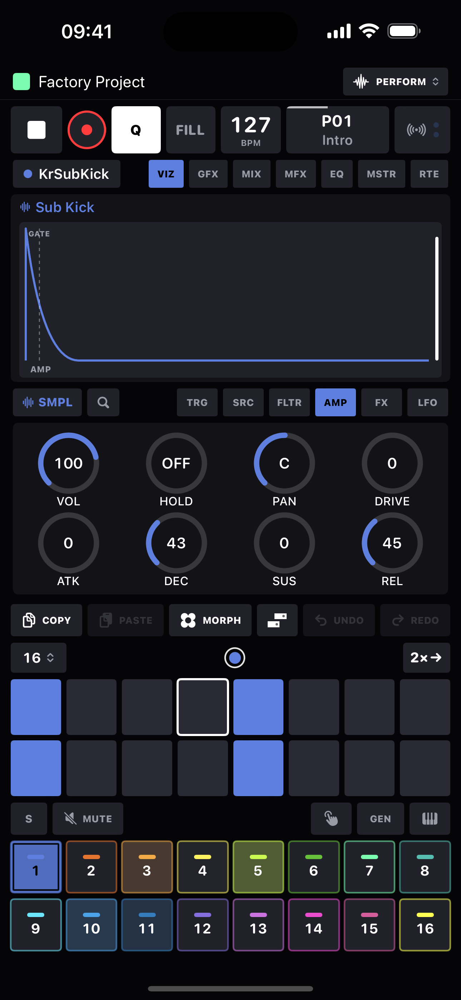

Devices
Every track hosts one device - a sound engine with its own knob pages. Swap devices from the device chip above the knobs; the sequence stays, the sound changes.
The devices
| Device | Voices | What it is |
|---|---|---|
| SAMPLER | 1–8 | Plays samples from the project pool through six sampler modes - one-shot, repitch, warp, stretch, slice and grid. The Voices setting (1–8, in track setup) lets replaced hits ring instead of cutting. |
| MONO | mono | Seven detuned oscillators plus a sub sine - a fat unison monosynth with glide. |
| POLY | 8 | Three oscillators per voice, eight voices - the polyphonic sibling. |
| FM | 8 | Four sine operators, eight algorithms, feedback - classic 4-op FM. |
| WT | 8 | Wavetable scanning with up to 7-voice unison, reading standard 2048-sample-frame tables from a 128-slot pool. |
| ACID | mono | One oscillator into a zero-delay-feedback ladder filter - a classic acid voice with slides and accents. |
| DRUM | mono | Ten synthesized drum models - 808 and 909 kicks and snares, clap, hats, tom, rim, cowbell - with punch, sweep, tone and noise macros. A new hit chokes the last. |
| PLUCK | 8 | Karplus-Strong plucked string: a burst-excited delay line with damping, pick position and a detuned stereo double. |
| MIDI | - | No internal sound: the track's notes and knob movements go out the MIDI wire to hardware or other apps. |
Param pages
Every internal device's parameter area is a row of pages: TRG (the step editor), the device's sound pages, then LFO.
| Device | Pages |
|---|---|
| Sampler | TRG · SRC · FLTR · AMP · FX · LFO |
| Mono / Poly / Wavetable / Acid | TRG · OSC · FLTR · AMP · FX · LFO |
| Drum | TRG · DRUM · FLTR · AMP · FX · LFO |
| Pluck | TRG · STR · FLTR · AMP · FX · LFO |
| FM | TRG · FM · MOD · FLTR · AMP · FX · LFO |
| MIDI | TRG · SRC · 1 · 2 · 3 · LFO |
Each sound page is a fixed 2×4 knob grid. A device that doesn't use a cell leaves it empty rather than reshuffling - so your hands (and any MIDI-mapped controller) always find the same knob in the same place. When a step is latched, the header reads LOCKS and the knobs edit that step's parameter locks instead of the track sound.
The sampler's six modes
The sampler reinterprets its SRC page per mode. Pick the mode from the dropdown chip in the waveform header (it's a parameter underneath - so it can be locked per step). The window you play is always set by START and LENGTH.
| Mode | What it does |
|---|---|
| ONE SHOT | Classic playback of the START/LENGTH window. MODE picks direction and looping: FWD, REV, FWD∞, REV∞; LOOP places the loop point inside the window. |
| REPITCH | Fits the window into BARS by changing playback speed - pitch follows tempo, like vinyl. LOOP becomes a simple ON/OFF wrap. |
| WARP | Beat-slicing time-stretch: the window is cut into musical segments (SEG: 1/4 … 1/64 note divisions) whose starts always land on the tempo grid across BARS. Pitch stays put at TUNE; segment joins are crossfaded. The first BARS stop is AUTO - the loop length is guessed from the sample's duration at the current tempo. |
| STRETCH | Smooth time-stretch: the playhead crosses the window in BARS while pitch stays fully independent - granular-smooth, best on pads, vocals and melodic loops. |
| SLICE | Plays your hand-placed slice markers from the slice editor. The SLICE knob picks a slice; incoming notes step through slices with wraparound instead of repitching. The region before your first marker counts as slice 1. |
| GRID | Even chop: GRID divides the window into 2, 4, 8, 16, 32 or 64 equal slices; SLICE and notes select exactly as in SLICE mode. |
SRC page by mode
| Cell | ONE SHOT | REPITCH | WARP | STRETCH | SLICE | GRID |
|---|---|---|---|---|---|---|
| 1 | TUNE | - | TUNE | TUNE | TUNE | TUNE |
| 2 | FINE | - | FINE | FINE | FINE | FINE |
| 3 | MODE | BARS | BARS (AUTO) | BARS | - | - |
| 4 | SAMPLE | SAMPLE | SAMPLE | SAMPLE | SAMPLE | SAMPLE |
| 5 | START | START | SEG | START | - | - |
| 6 | LENGTH | LENGTH | - | LENGTH | - | GRID |
| 7 | LOOP | LOOP on/off | - | - | SLICE | SLICE |
| 8 | LEVEL | LEVEL | LEVEL | LEVEL | LEVEL | LEVEL |
- TUNE ±24 semitones · FINE ±50 cents.
- BARS: 1/4, 1/2, 1, 2, 4, 8 or 16 bars - the sample's musical length for the tempo-fitting modes.
- SAMPLE: the pool slot (1-based). Latched at trig time, so it p-locks cleanly per step.
Mono & Poly synths: OSC page
| Knob | Does |
|---|---|
| TUNE / FINE | ±24 semitones / ±50 cents. |
| WAVE | SAW, SQR, PLS (25% pulse) or TRI - anti-aliased. |
| SUB | Level of a sine one octave down. |
| DETUNE | Unison spread, up to ±60 cents across the stack. |
| WIDTH | Stereo placement of the unison stack. |
| GLIDE | Constant-time portamento, up to ~1.2 s. |
| LEVEL | Oscillator section level into the filter. |
FM synth: FM & MOD pages
FM page: TUNE · FINE · ALGO · RATIO C / RATIO A · RATIO B · FDBK · LEVEL. MOD page: FM · M.ATK · M.DEC · M.LVL / DET.
- ALGO: eight operator topologies:
2PAIR(two 2-op pairs),PR+2(pair + two sines),FAN+1(two modulators into one carrier + sine),CHN+1(3-op chain + sine),STACK(full 4-op chain),FAN3(three modulators into one),1→3(one modulator, three carriers),ADD4(pure additive). - RATIO A / B / C: operator frequency ratios from ×0.25 to ×16 (RATIO B drives two operators).
- FM: the modulation-index macro: how hard modulators push carriers.
- M.ATK / M.DEC / M.LVL: the modulator envelope. It ignores note-off (the amp envelope does the gating); M.LVL at max means a static, unchanging FM amount.
- FDBK: the top operator modulates itself for noise and edge.
- DET: spreads two operators up to ±14 cents for thickness.
Wavetable synth: OSC page
- SCAN: SMOOTH crossfades between adjacent frames as POS moves; STEP hard-switches.
- TABLE: the wavetable pool slot (128 slots per project).
- POS: the scan position through the table's frames: the performance knob. Ride it with an LFO.
- UNISON: 1 to 7 stacked readers; SPREAD detunes (±40 cents) and pans the stack in one move.
Tables follow the common wavetable convention - 2048-sample frames, up to 256 per file - and anything that isn't a clean multiple of 2048 loads as a single-cycle wave. Eight factory tables ship in the pool: Basic Morph, PWM, Harmonics, Sync, FM, Vowel, Bell and Digital. Import your own from any Files location via the wavetable browser.
Acid: the squelch box
One oscillator (SAW or SQR), straight into a 4-pole ladder filter modeled with zero-delay feedback. No filter TYPE knob - the ladder is the filter. The low end thins as resonance rises, exactly like the original; that's the squelch.
- Slides: it's mono, and legato is the language: a note that starts while the previous gate still holds slides - pitch glides to the new note with no envelope retrig. In the sequencer, just overlap the gates. GLIDE sets the slide time (default ≈ 65 ms, the classic fixed slide feel).
- Accents: a trig with velocity 110 or higher accents: louder (accent is the voice's only dynamic, true to the original) plus a resonance-leaning kick to the filter cutoff. The ACCENT knob sets the depth. Default trig velocity is 100, so plain steps stay plain - push a step's velocity up to accent it.
- DRIVE after the filter: uniquely on this device, drive sits after the ladder, so the resonant peak hits the clipper hardest as it sweeps. That's the acid scream.
Drum: the synthesized kit
Ten one-shot models on the MODEL knob: KICK (808) and KIK9 (909), SNARE (808) and SNR9 (909), CLAP, CHAT (closed hat), OHAT (open hat), TOM, RIM and BELL (the cowbell). Every model is synthesized from scratch, with structures drawn from the best-studied circuit models of the originals: the 808 kick's attack-FM glissando into a saturator, the 909's click band and transistor VCA, the 808 snare's two-mode shell, the 909 snare's 1.47-ratio pair and held noise burst, the clap's three sawtooth pre-echoes into a reverb-tail envelope, the hats' six-square cluster (Plaits' measured ratios) through a band-pass and the asymmetric swing VCA, and the cowbell's 540/800 Hz pulse pair. No samples needed; every knob is p-lockable.
- PUNCH: transient weight - attack saturation on the kick and tom, snap on the snare, tighter pre-echoes on the clap.
- SWEEP: pitch-envelope depth. The kick's drop, the tom's bend, the snare's shell lift. P-lock it per step for classic tuned-kick lines.
- TONE: the model's color - body saturation on the kick, noise-band center on snare and clap, the hats' high-pass, the bell's band.
- NOISE: the noise mix - air on the kick, wires on the snare, sizzle on the hats, tail length on the clap.
- Pitch follows the keys: notes tune each hit, TUNE/FINE offset it, and the DEC knob on the AMP page is the length of the hit.
- Choke: a new hit cuts the previous one, per track - run closed and open hats on two tracks and they choke independently, like separate voices on the original boxes.
Pluck: the string
A Karplus-Strong string: each note fires a one-period exciter burst into a delay line with a damping filter in the loop, and the line rings like a plucked string. Eight voices - chords work.
- EXCITE: the burst's color - NOISE (classic), BRITE (wiry), SOFT (nylon/felt), PICK (a saw stroke with skin noise).
- RING: the loop feedback - how long the string sustains.
- DAMP: in-loop darkening - high settings mute like a palm on the strings.
- POS: pick position - a comb notch on the burst, from bridge twang to fingerboard round.
- SPREAD: a second, slightly detuned string on the right - the stereo double.
FLTR page: every device
TYPE · FREQ · RESO · ENV over F.ATK · F.DEC · F.SUS · F.REL.
| TYPE | Filter |
|---|---|
| OFF | Bypass. |
| LP2 | 12 dB/oct lowpass. |
| LP4 | 24 dB/oct lowpass (two cascaded stages). |
| BP | Bandpass. |
| HP | Highpass. |
| NOT | Notch. |
FREQ sweeps 20 Hz–18 kHz; ENV is a bipolar envelope-to-cutoff depth with its own ADSR underneath. The filter pane draws the actual frequency response - and a dashed amber curve showing where full envelope depth will take it.

AMP page: envelopes, one-shot and gated
VOL · VEL SEN · PAN · DRIVE over ATK · DEC · SUS · REL. Envelope times run to 4 seconds with the knob resolution concentrated where percussion lives.
- REL at max shows ∞ - one-shot mode. Note-off is ignored and DEC becomes the tail knob, drum-machine style. Samples default to this. Pull REL below ∞ for a normal gated ADSR where SUS and your gate lengths matter.
- DEC at max shows ∞: on the sampler the envelope holds open so the whole sample plays through. On synths (no sample end to stop them) ∞-decay becomes a long 20-second tail, and one-shot mode always decays to silence - so nothing can drone forever.
- VEL SEN: how much velocity drives level; 0 flattens all dynamics.
FX page: the per-voice chain
BIT · SRR · CHORUS · RING over HP · STEREO · DELAY · REVERB. Signal order: HP → BIT/SRR → DRIVE → RING → filter → STEREO → amp/pan → sends, with CHORUS as a per-track stereo insert.
| Knob | Does |
|---|---|
| BIT | Bit-crusher, 16 down to 2 bits - envelope-tracked like the classic vintage samplers, so resolution falls as a note decays into a sputtery tail. |
| SRR | Sample-rate reduction, ÷1 to ÷100 sample-and-hold. |
| DRIVE | The shared waveshaper (on the AMP page): asymmetric tanh with up to ~61× gain and automatic makeup - even harmonics, amp-like. |
| RING | Ring modulator - one knob sweeps both mix and carrier (40 Hz–4 kHz). |
| CHORUS | Stereo quadrature chorus on the track sum. |
| HP | Dedicated highpass ahead of everything, 20 Hz–4 kHz. |
| STEREO | Mid/side width, 100% = as recorded; above that, mono sources gain synthesized width. |
| DELAY / REVERB | Sends to the global tempo-synced delay and plate reverb. See FX & mixer. |